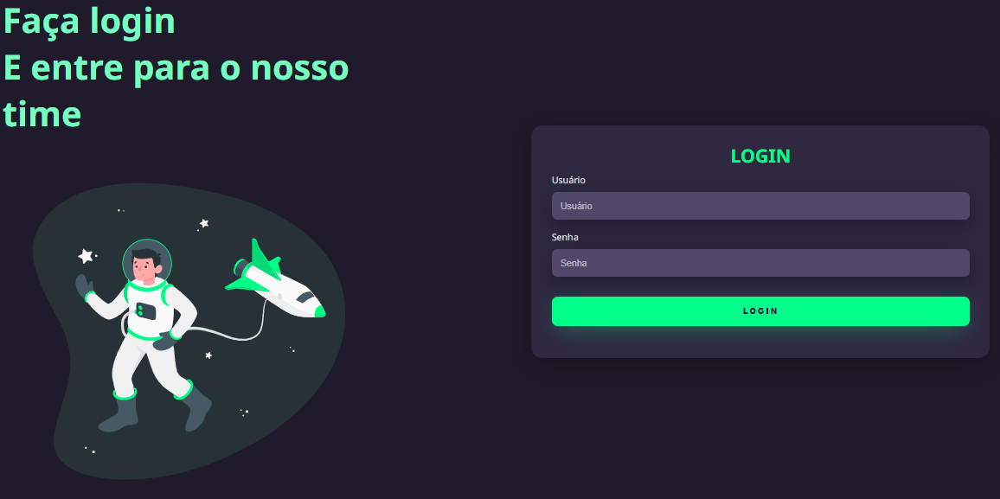
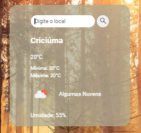
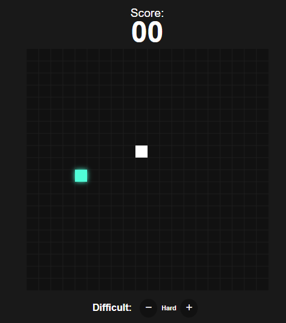

Bem-vindo à seção de projetos do meu portfólio! Aqui, você encontrará uma coleção dos trabalhos que desenvolvi durante meus estudos em Análise e Desenvolvimento de Sistemas. Cada projeto reflete meu aprendizado e paixão por tecnologia, desde a construção de aplicativos simples até a criação de soluções mais complexas.

Outro projeto visando o treino de html e css

O site acima possibilita pesquisar a temperatura em cidades brasileiras.

Projeto criado para treinar html, css e javascript
Se você quiser ver os códigos-fonte e saber mais detalhes sobre cada um desses projetos, fique à vontade para visitar meu perfil no GitHub clicando no link abaixo. Acompanhe minha jornada e explore como estou aplicando meus conhecimentos na prática.